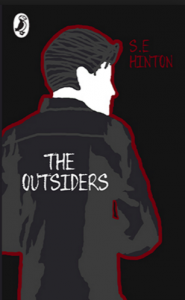
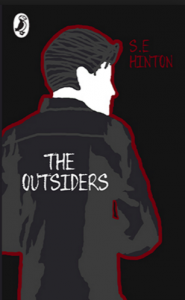

The Outsiders book has many different covers.
Setting: The Outsiders takes place in Tulse, Oklahoma in the 1960s
Point of view: Written from the first-person point of view. Ponyboy is the protagonist and narrator of the story.
Age: Is the best story for 13 years old and up.
Cover Artist of the book was Robert Hunt. Robert Hunt is an American illustrator and painter, born in 1952 in Berkeley, California. He won the Hamilton King Award 2015 and Gold Medals Society of Illustraters.
The Outsiders is a well-known young adult novel written by an American writer Susan Eloise Hinton, and it was published in 1967. It tells the story of a 14-year-old boy called Ponyboy Curtis and his two older brothers, Soda and Darry. The boys are orphans and struggle to stick together in their lower-class neighborhood, known as the East Side.
Photo
The Outsiders is loosely based on a real-life high school drama, and it won many awards:
New York Herald Tribune Best Teenage Books List, 1967
Chicago Tribune Book World Spring Book Festival Honor Book, 1967
Media and Methods Maxi Award, 1975
ALA Best Young Adult Books, 1975
Massachusetts Children’s Book Award, 1979
The Author, Susan Eloise Hinton, wrote the novel when she was only 15 years old. She got inspired to do the book by two rival gangs from her school, Will Rogers High School,
the Gresears and the Socs(Socials).
PhotoPhoto
The Outsiders has been one of the most popular book among teens and preteens since it came out in 1967. Over 15 million copies have been sold, and it constant on middle-school and high school reading lists. It also has been translated into 30 languages.
To know more information about the Writer, go to the navagation bar and click writer. To know more about the gangs and the characters go to the navagation ber and click Info
{kind=link}
{kind=link}
{kind=link}